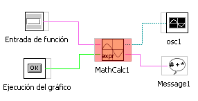
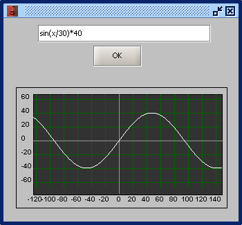

Función: TRAZADOR GRAFICO DE FUNCIONES
Esta función representa graficamente una ecuación de variable independiente x.
La entrada de la ecuación se realiza mediente un aobjeto de entrada tipo string y la generación del gráfico se realiza mediante una entrada de tipo booleano
La salida es una matriz tipo 1D de decimales DBL
|  |  |